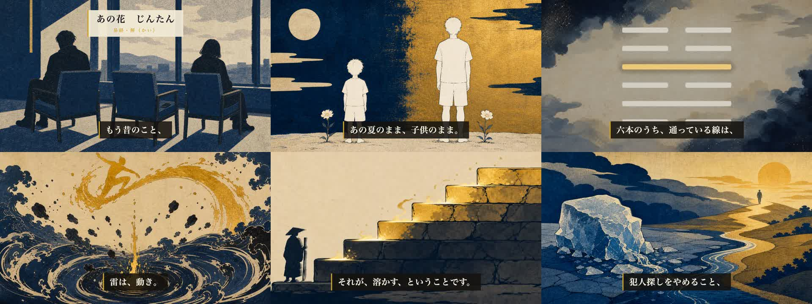
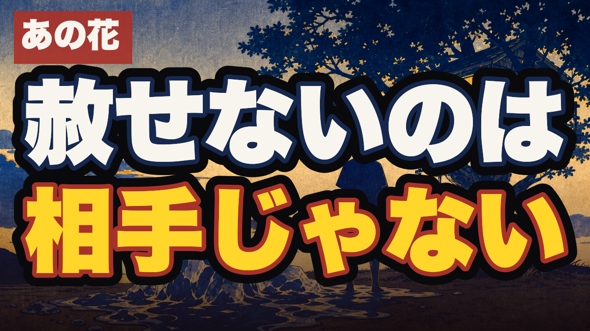

絵コンテ承認後、音声→画像→六爻図→モーション→同期→レンダまで自走しました。本編は完成しています（8分31秒）。機械ゲートは全通過、独立採点は95点。公開前に、あなたの判断が3つ必要です。
releases/064/ep44_kai.mp4（511.4秒・730MB・ピーク -3.4dB）releases/064/ep44_kai.mp4（1920×1080・730MB）。
昨日承認いただいた台本を、そのまま作るつもりでした。ですが工程上必須のfork独立採点（制作会話を見せない別セッション）が2回落としました。落ちた理由は好みではなく、易経DBと一次情報との不一致です。直した結果、最終95点で通過しました。
| 指摘 | 元の書き方 | 直した書き方 |
|---|---|---|
| DBで支えられない断定 | 陽二本が「詰まりを抜いていく」＝爻が作動するように語っていた | 「通っている線は二本だけ。二番目は下の三本の真ん中、四番目は上の三本のいちばん下」＝DBが言える範囲へ |
| 作中事実の齟齬 | 「六人が口をきかなくなった」（めんまは故人）／「全員が自分のせいだと思っている」 | 「残された五人は疎遠になっていた」（Wikipedia原文“疎遠”）／自責は裏取りできた4人（じんたん・あなる・ゆきあつ・ぽっぽ）に限定 |
| 爻の現代訳が飛んでいた | 初爻＝自分を責めるのをやめる／三爻＝重さを背負って次へ／四爻＝小さなしがらみ | 初爻＝解けた直後は結論を急がず休む／三爻＝赦した側という高い席から裁き続けない／四爻＝惰性で続く結びつきを一つ外す（いずれもDB注釈から素直に出る訳） |
| 文体が整いすぎ | 「AではなくB、なんです」が5シーン連続。言い淀み0 | 3箇所を崩し、幕4に言い淀み「まあ」を1つ。刃に生活場面（年賀状の宛名・去年で止まったトーク画面）を追加 |
| ゲート | 結果 | 中身 |
|---|---|---|
| 台本 preflight | PASS | 6幕v2.3・幕1が21秒・対比投入50秒・全27シーン165字以内・作中事実22件すべて一次確認済み |
| fork独立採点（codex・制作会話なし） | 95 / 100 | 冒頭ゲート✅・作品への橋ゲート✅・意図逸脱なし。※90未満は人間ゲートへ出せない規則 |
| 読み（TTS）検証 | PASS | 誤読7件を検出→tts_overrides.jsonで確定（通っ／蹇／咎／その上の段 ほか）→再合成 |
| タイミング同期 | PASS | whisperで字幕を音声に実測アライン。冒頭0-8秒の約束オーバーレイあり |
| 識別ブラインド監査 | PASS | 白紙の監査人が全30枚で作品もキャラも不明。顔・原作意匠・文字・写実の4安全弁すべて false |
| ミックス／黒落ち | PASS | ピーク -3.4dB・幕間BGM -36.8dB・26のシーン境界すべてで黒落ちなし |
※識別監査は途中2枚で落ちました（V_02_01が「あの花」と当てられた／V_05_01の空に漢字らしき字が生成された）。一般化して再生成し、上表は最終版の結果です。
| 幕 | 実測 | 基準 | |
|---|---|---|---|
| 違和感（冒頭） | 23.8秒 | 30秒前後 | ✓ |
| 観察 | 104.5秒（20.5%） | 25%上限 | ✓ |
| 種明かし | 147.6秒（2分28秒） | 2-3分（下限厳守） | ✓ |
| 風刺の刃 | 40.7秒 | 30秒-1分 | ✓ |
| 処方箋 | 151.3秒（2分31秒） | 1.5-3分 | ✓ |
| 余韻 | 27.9秒 | 30秒 | ✓ |

概要欄の冒頭・固定コメント・ショート派生の核に再利用します。full_script.json のトップレベルに記録済み（痛み先頭転換の必須項目）。
改稿版で進めてよいか。
A：承認する（このまま公開工程へ）／B：ここを直して（該当箇所を指定してください）
完成した本編でよいか。
A：承認する／B：直す（カット・字幕・BGM・尺のどれかを指定）
痛み先頭型 <痛みの一文>。｜作品×卦（H58転換コホート・「第N話」なし）
| 案 | タイトル | ねらい |
|---|---|---|
| A | 赦していないのは、相手じゃない。｜あの花×解 | share_lineと同一。刺さりが最も鋭い。ただし作品を知らない人には主語が見えにくい |
| B | 気まずいまま会わなくなった人が、たぶん一人はいる。｜あの花×解 | 冒頭の一文そのまま。誰にでも当たる＝分母が広い |
| C | 時間が解決したはずの一箇所だけ、まだ凍っている。｜あの花×解 | 「時間が解決する」という社会通念への反論。卦（解）と直結 |
推奨は B。転換の主眼は「送りたくなるか」より先に「自分の話だと気づくか」で、Bがいちばん身に覚えを起こします（AはBを見た後の余韻として概要欄・固定コメントで効かせられます）。
yt-publish.mjs で private＋予約投稿（公開ボタンは押しません）→ yt-schedule-verify で裏取り未了：final-video の承認記録（この判断待ち）／scene-visual の証跡run（画像29枚分）。公開予定日はまだ未設定です。